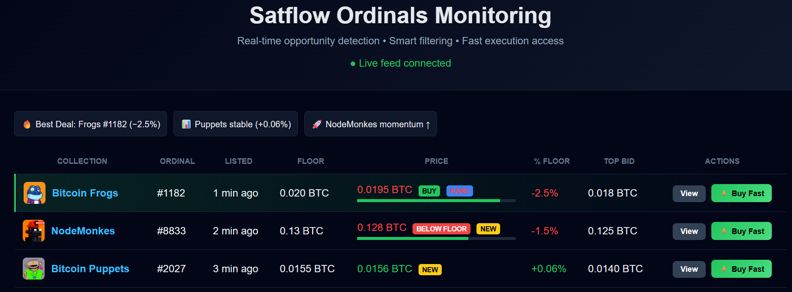

Internal web-based tool designed to monitor newly listed Satflow Ordinals in near real-time, helping traders identify and act on relevant opportunities faster through intelligent filtering and direct platform access.
Live dashboard preview

Continuously retrieves newly listed Ordinals from Satflow (API integration planned), ensuring timely visibility of new opportunities.
Users can define personalized criteria (price range, timing, other parameters) so that only relevant listings are surfaced.
Alerts are sent when new listings match user-defined filters, including summary details and a direct link to the Satflow listing.
Direct links allow traders to quickly access listings on Satflow, minimizing the time between opportunity detection and action.
This demo uses sample data. The workflow reflects the intended interaction with Satflow APIs for internal monitoring and alerting purposes.